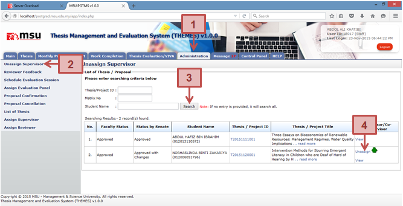
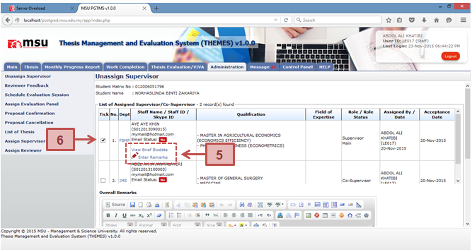
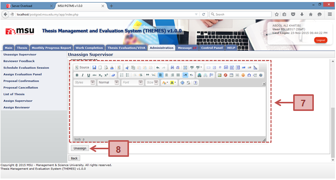

This facility is provided to the Faculty user if there is a need to unassig the Supervisor from the student due to some reason.



Figure 25: Unassign Supervisor
Prerequisite
The Faculty has assigned the Supervisor to the Student
Steps
- Click on the Administration tab at the Top Panel section.
- Click on the Unassign Supervisor at the Left Panel section.
- The list of student will be displayed on the Working Area section.
- Find the student to unassign the Supervisor and click on the Unassign link.
- The list of Supervisor for the selected student will be displayed. You may view the Supervisor brief biodata or enter specific remark for this Supervisor.
- Tick the checkbox of the selected Supervisor to be unassigned.
- Enter the reason on the Overall Remarks text field if you have it.
- Click Unassign button once you have confirm to unassign the Supervisor from the student.
Next Action
The Faculty User is needed to re-assign another Supervisor or Co-Supervisor to supervise the student.
Warning
The system will prompt a notification message if the checkbox is unselected before the submission.
Note
None
Created with the Personal Edition of HelpNDoc: Easily create Web Help sites